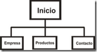
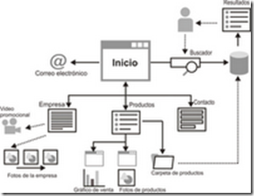
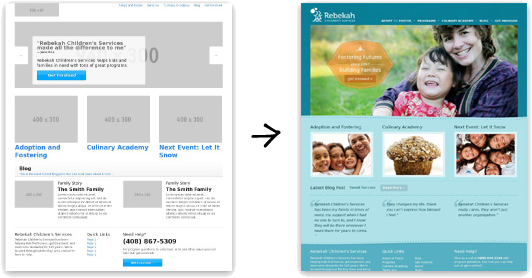

Prototipado y Proceso de Diseño
Conceptos básicos
Interfaz de Usuario
Es el medio con que el usuario puede comunicarse con una máquina, equipo, computadora o dispositivo, y
comprende todos los puntos de contacto entre el usuario y el equipo.
Incluyen elementos como menús, ventanas, contenido gráfico, cursor, etc.
Arquitectura de Información
El Arquitecto define la organización, etiquetado, navegación y sistema de búsqueda de un sitio web, elementos que ayudan a los usuarios a encontrar y gestionar la información de manera efectiva.
Proceso de Diseño de Interfaz de Usuario
Proceso iterativo donde los usuarios interactúan con los diseñadores y prototipados de la interfaz para decidir las características, organización, apariencia y funcionamiento de la interfaz de usurio del sistema.
Proceso de Diseño de Interfaz de Usuario

Proceso de Diseño de Interfaz de Usuario
Actividades para el proceso de Diseño de Interfaz de Usuario:
- Análisis del usuario
- Análisis Jerárquico de Tareas (HTA)
- Estudios Etnográficos
- Entrevistas de Usuarios
- Prototipado del sistema
- Evaluación de la Interfaz
Análisis Jerárquico de Tareas

Estudio Etnográfico
Observación de los usuarios en su contexto y dentro de su entorno, tratando de no interferir en sus acciones, usos y costumbres para determinar los requerimientos de usabilidad.
Entrevistas de Usuarios
Reunirse con los usuarios para entender mejor sus necesidades, motivaciones, cultura laboral y otros aspectos. Pueden ser reuniones individuales o a través de grupos de enfoque.
Tipos de diagramas
- Planos: Blueprints, architecture map
Diagramas de organización y funcionamiento - Maquetas: wireframe, mockup, prototype
Diagramas de presentación

Blueprint o Architecture Map
Son diagramas de organización y funcionamiento.
También se denominan diagramas de contenido o flujo o mapa web.
El objetivo de estos diagramas es mostrar la estructura del sitio y su flujo de navegación.
Blueprint o Architecture Map
 
Maquetas: Diagramas de Presentación
El objetivo es mostrar el contenido de las páginas, mostrando los elementos que se plantearon en los primeros planos (blueprints) y ubicándolos en las páginas o pantallas del producto final.
Tipos de Prototipo
- Baja Fidelidad: Conjunto de dibujos que representan cómo estarán organizados los elementos
en las páginas en aspectos generales, sin entrar en detalle.
- Sketch
- Wireframa
- StoryBoard
- Alta Fidelidad: Se representan aspectos más precisos. Sirven para detallar el proceso interactivo
de una o varias tareas.
- Mockup
- Prototipo
Tipos de Diseño
- Sketch
- Thumbnail Sketches
- Wireframe
- StoryBoard
- Mockup
- Prototipo
Sketch

Sketch
- Es un bosquejo o dibujo rápido e informal
- No tiene muchos detalles
- Guía general que reproduce un concepto o idea de un proyecto de una manera sencilla
- Se realiza a mano con lápiz y borrador
Thumbnail Sketches
- Secuencia de Sketchs que muestran cómo se realiza una tarea.

Wireframe

Wireframe
- Es una representación estática en baja calidad de un diseño
- Esta representación muestra:
- Principales grupos de contenido
- Estructura de la información
- Descripción y visualización básica del usuario
- Interacción de la interfaz
- Representación de cada parte importante del producto final
- El entregable es una imagen
StoryBoard o WireFlows
- Secuencia de wireframes que muestran cómo se realiza una tarea.
Mockup

Mockup

Mockup
- Representación estática de un diseño en calidad media o alta
- Representa la estructura de la información
- Visualiza el contenido
- Demuestra las funcionalidades básicas de una manera estática
- El entregable es una imagen.
Prototipo

Prototipo
- La calidad pueda variar entre media y alta
- Representación navegable del producto final
- Simula la interacción interfaz de usuario
- Permitir que el usuario:
- Experimente interactuando con la interfaz y contenido del proyecto
- Pruebe las principales interacciones de una manera similar al producto final
- El entregable es un HTML, PPT, Animación o formato navegable.
Ventajas del Pre-Diseño
- El equipo y el cliente se centran en el diseño de contenidos e interacción y no en el diseño visual.
- El cliente ve y comprende cómo será la aplicación, mucho mejor que si se ofrece descrita en un documento.
- Evita malentendidos entre el equipo de desarrollo y el cliente.
- Ayuda a especificar los requerimientos y a detectar inconsistencias o falta de funcionalidad.
- Complemento para el análisis.
Ventajas del Pre-Diseño
- Se puede modificar el diseño con facilidad y rapidez.
- Se evitan modificaciones posteriores mucho más costosas cuando la aplicación ya está implementada.
- Se reduce costo y tiempo.
Ventajas del Pre-Diseño
- Permite realizar pruebas de usabilidad, como test con usuarios, en etapas tempranas del proyecto.
- Se detectan y solucionan los problemas antes de comenzar su implementación.
- El resultado son aplicaciones web más fáciles de entender, de usar y se ajustan mejor a las necesidades de los usuarios.
Proceso de Prototipado de la IU
- Prototipo en papel: Maquetas de los diseños de pantalla
- Prototipo Automatizado: Permite al usuario realizar pruebas y simulación
Comparación

Antes de dibujar...
- Realizar entrevistas con el cliente y el equipo de desarrollo para definir los requisitos, los objetivos y el público objetivo.
- Analizar la web actual (si existe): problemas de usabilidad y accesibilidad, estadísticas de acceso, test con usuarios y encuestas.
- Benchmarking, estudio comparativo de la competencia.
- Definir de la arquitectura de informacón y mapa web.
Ejercicio: Sketch
Realice Sketchs formando un 'Thumbnail Skeths' de la interfaz de usuario del sistema en papel.
Debe tener en cuenta:
- ¿Qué opciones debe ofrecer al usuario?
- ¿Qué campos hay para ingresar datos?
- ¿Hay ejercicios de ejemplo?
- ¿Hay una introducción teorica?
- Sistemas similares.
- ¿Qué acciones le permiten al usuario realizar?
- Mensajes de Error
- Conversión de unidades
Evaluación de la Interfaz
Proceso de evaluar la forma en que se utiliza una interfaz y verificar que cumple los requerimientos
del
usuario.
Es parte del proceso de verificación y validación de los sistemas software.
Evaluación de la Interfaz

Ejercicio: Evaluacion de Interfaz
Intercambie su diseño de interfaz con otro grupo:
- ¿Qué opciones tiene este sistema que no estén disponibles en el propio?
- ¿Es deseable introducir en un futuro rediseño del sistema estas características?
- ¿Qué ventajas y desventajas presenta el otro sistema con respecto al propio?
Presente un documento al otro equipo con el análisis realizado.
Ejercicio: Rediseño
Realice un rediseño del sistema teniendo en cuenta el documento de sugerencias recibido.
Si son pocas modificaciones, puede marcarlas con un color diferente sobre los sketches.
En caso de ser varias modificaciones, se sugiere dibujar el sketch nuevamente.
Información en un wireframe
- Inventario de contenido: Contenido que debe estar presente en cada página
- Elementos de la página: Cabeceras, enlaces, listas, imágenes, formularios, etc.
- Etiquetado: De vínculos, títulos, etc.
- Layout: Ubicación, colocación y agrupación de los elementos de la página cabeceras, pies, navegación, áreas de contenido, titulares, etc.)
- Comportamiento: Notas asociadas a los elementos para indicar cómo se deben mostrar o el comportamiento funcional cuando se activa.
Ejemplo de wireframe

Ejercicio: Wireframe
Emplee algún programa para confeccionar Wireframes y generar un wireflow.


“Es mejor diseñar la experiencia del usuario que rectificarla.”

¿Dudas, Preguntas, Comentarios?